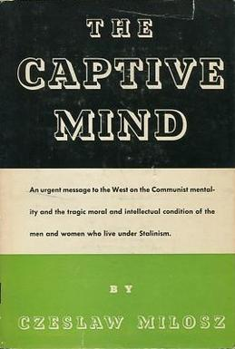
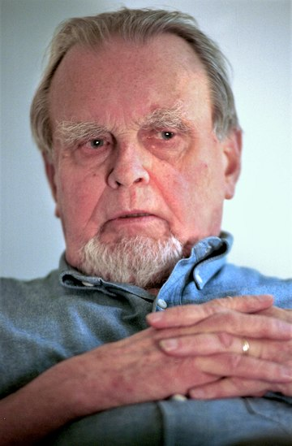
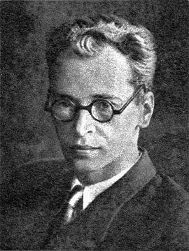

Czesław Miłosz is a Polish writer and Nobel Laureate who first came to Western attention in the early 1950s with the publication of The Captive Mind one of the earliest exposes of the nightmare of Soviet domination of Eastern Europe following WWII. He had not been in the Communist Party but was nevertheless cultural attaché to the Polish embassy in Washington DC from which he defected, or as he preferred to put it, 'broke with' the Polish Government.
Czesław Miłosz in 1999 in Krakow, PolandThe introduction and first three chapters are all fascinating analyses of the particular form that Stalinism has taken in Poland, but the succeeding four chapters on Alpha, Beta, Gamma and Delta are, despite pseudonyms suggesting strains of a pathogen, are portraits of identifiable individuals. In each case the portraits are quite gripping stories of how people of great ability and ambition navigate the whipsaw of life in pre-war Poland, then the Nazi occupation followed by 'liberation' and the fairly rapid pacification of the national government to the dicates of the USSR and its system of thought 'dialectics'.
Alpha, the Moralist

Jerzy Andrzejewski whom this chapter is about.The history of the last decades in Central and Eastern Europe abounds in situations in regard to which all epithets and theoretical considerations lose meaning. A man’s effort to match up to these situations decides his fate. The solution each accepts differs according to those impalpable factors which constitute his individuality.
Since the fate of millions is often most apparent in those who by profession note changes in themselves and in others, i.e. the writers, a few portraits of typical Eastern European writers may serve as concrete examples of what is happening within the Imperium.
The man I call Alpha is one of the best-known prose writers east of the Elbe. He was a close friend of mine, and memories of many difficult moments that we went through together tie us to each other. I find it hard to remain unmoved when I recall him. I even ask myself if I should subject him to this analysis. But I shall do so because friendship would not prevent me from writing an article on his books in which I would say more or less what I shall say here.
Before the War, he was a tall, thin youth with horn-rimmed glasses. He printed his stories in a certain right-wing weekly that was held in low esteem by the literary circles of Warsaw, which were made up chiefly of Jews or of people who looked with distaste on the racist and totalitarian yearnings of this publication. The editor of the weekly had to some degree discovered him, and had reason to congratulate himself upon his choice, for Alpha’s talent was developing rapidly. Very shortly, his first novel began to appear serially in the weekly. It was later published by one of the leading houses, and created a great stir.
His main interest was directed toward tragic moral conflicts. At the time many young writers were under the spell of Joseph Conrad’s prose. Alpha was particularly susceptible to Conrad’s style because he had a tendency to create solemn and hieratic characters. Night fascinated him. Small people with their powerful passions in a night whose silence and mystery embraced their fate in its gigantic folds— this was the usual formula of his novels and stories. His youthful works resembled Conrad’s in theii majesty and silence, and in a sense of the immensity of the inhuman, indifferent world. Alpha’s position was metaphysical and tragic. He was tormented by the enigma of purity—moral purity and purity of tone in what he wrote. He distilled his sentences. He wanted each to be not merely a statement but, like a phrase in a musical composition, irreplaceable and effective in its very sound.
This need for purity, I would say for otherworldly purity, was basic to his character; yet in his relations with people he was haughty and imperious. His pursuit of purity in his work was closely linked to his personal arrogance; the former was his sublimation, his other ego, the repository of all his hopes. The more he worried about his disordered private life, the more highly he prized his redeeming activity, which is what his writing was for him, and the more he accorded to it the nature of a solemn rite. The one rank that could have sated his ambition was that of a cardinal. Slow movements, the flow of scarlet silk, the proffering of a ring to kiss—this for him was purity of gesture, self-expression through the medium of a better self. There are certain comic actors who dream all their lives of playing a serious, dignified role; in him, much the same motives were at play. Alpha, who was gifted with an exceptional sense of humor in conversation, changed completely when he began to write; then he dwelt only in the highest registers of tragedy. His ambition reached further than fame as an author of well-written books. He wanted to be a moral authority.
The novel I mentioned, which was his first big success, was widely acclaimed as a Catholic novel, and he was hailed as the most gifted Catholic writer, which in a Catholic country like Poland was no small matter. It is hard to say whether or not he really was a Catholic writer. The number of twentieth-century Catholic authors is negligible. So-called conversions of intellectuals are usually of a dubious nature, not significantly different from transitory conversions to surrealism, expressionism, or existentialism.
Alpha was the kind of Catholic so many of us were. This was a period of interest in Thomism and of references to Jacques Maritain in literary discussion. It would be wrong to maintain that for all these “intellectual Catholics” literary fashion alone was at stake; one cannot reduce the clutching gestures of a drowning man to a question of fashion. But it would be equally incorrect to consider literary debates based on a skillful juggling of Thomist terminology as symptoms of Catholicism. Be that as it may, the “intellectual Catholics” colored certain literary circles. Theirs was a special political role; they were foes of racism and totalitarianism. In this they differed from the Catholics proper, whose political mentality was not entirely free of worship of “healthy organisms” (i.e. Italy and Germany) and approval of anti-Semitic brawls. The Communists despised Jacques Maritain’s influence as degenerate, but they tolerated the “intellectual Catholics” because they opposed the ideas of the extreme right. Soon after he published his novel, Alpha began to frequent the circles of the “intellectual Catholics” and the left. Sensitive to the opinion people held of him, and taking the writer’s role as a moral authority very seriously, he broke with the rightist weekly and signed an open letter against anti-Semitism.
Everyone looked for something different in Catholicism. Alpha, with his tragic sense of the world, looked for forms: words and concepts, in short, textures. This tragic sense in him was not unlike Wells’s Invisible Man, who when he wanted to appear among people had to paste on a false nose, bandage his face and pull gloves over his invisible hands. Catholicism supplied Alpha’s language. With concepts like sin and saintliness, damnation and grace he could grasp the experiences of the characters he described; and, even more important, the language of Catholicism automatically introduced the elevated tone that was so necessary to him and lulled his longing for a cardinal’s scarlet. The hero of his book was a priest, a sure sign of the influence of French Catholic novelists, and above all Bernanos, but also an expression of Alpha’s urge to create pure and powerful characters. The action took place in a village, and here his weaknesses revealed themselves. He was so preoccupied with building up moral conflicts that he was blind to concrete details and incapable of observing living people. Having been raised in the city, he knew little of peasants and their life. The village he described was a universal one; it could just as easily have been Breton or Flemish, and for this reason it was not a real village. The characters seemed to be wearing costumes alien to them (like young nobles dressed as shepherds in pastoral literature), and their speech was uniformly alike.
The story played itself out against a barely sketched-in background, but it was powerfully welded together and the critics received it enthusiastically. It ran into several editions quickly. He received a national award for it which brought him a large sum of money. It is possible that the prize jury took into account not only the artistic merits of the book, but also certain political advantages to themselves in choosing him. In those years, the government was clearly flirting with the extreme right and the choice of Alpha seemed a wise move. The right would certainly be satisfied; whereas the liberals would have no reason to attack the decision for after all everyone was then free to believe as he pleased and to write as he believed.
Despite fame and money, in his heart Alpha never considered his novel and his collection of short stories good books. Still, the position he had won permitted him to be as haughty as he loved to be. He was recognized as the author of profound and noble prose, whereas his colleagues could hardly hope to reach a wide public otherwise than by creating a cheap sensation. Their books were either glaringly naturalistic, especially in a physiological sense, or else they were psychological tracts disguised as novels. Men of letters lived in the intellectual ghetto of their literary cafes; and the more they suffered from their isolation from the life of the masses, the stranger and less comprehensible their styles became. The bitterness Alpha felt in spite of the success of his first books was something he found difficult to define, but the moment when he realized that there was something wrong with his writing was decisive for the rest of his life.
A great doubt assailed him. If his colleagues doubted the worth of their work, suspended as it was in a void, then his perplexity took on larger proportions. He wanted to attain a purity of moral tone, but purity in order to be genuine must be earthy, deeply rooted in experience and observation of life. He perceived that he had blundered into falseness by living in the midst of ideas about people, instead of among people themselves. What he knew about man was based on his own subjective experiences within the four walls of his room. His Catholicism was no more than a cover; he toyed with it as did many twentieth-century Catholics, trying to clothe his nudity in an esteemed, Old World cloak. He was seeking some means of awakening in his reader the emotional response he wanted, and obviously the reader on finding words like grace or sin, known to him since childhood, reacted strongly. But there is an element of dishonesty in such a use of words and concepts.
Alpha no longer knew whether the conflicts he created were real. Hailed as a Catholic writer, he knew that he was not; and his reaction was like that of a painter who having painted cubistically for a while is astonished to find that he is still called a cubist after he has changed his style. Critics, deceived by appearances, reckoned his books among those that were healthy and noble as opposed to the decadent works of his fellow-writers. But he realized that he was no healthier than his colleagues who at least did not attempt to hide theii sorry nakedness.
The War broke out, and our city and country became a part of Hitler’s Imperium. For five and a half years we lived in a dimension completely different from that which any literature or experience could have led us to know. What we beheld surpassed the most daring and the most macabre imagination. Descriptions of horrors known to us of old now made us smile at their naivete. German rule in Europe was ruthless, but nowhere so ruthless as in the East, for the East was populated by races which, according to the doctrines of National Socialism, were either to be utterly eradicated or else used for heavy physical labor. The events we were forced to participate in resulted from the effort to put these doctrines into practice.
Still we lived; and since we were writers, we tried to write. True, from time to time one of us dropped out, shipped off to a concentration camp or shot. There was no help for this. We were like people marooned on a dissolving floe of ice; we dared not think of the moment when it would melt away. War communiques supplied the latest data on our race with death. We had to write; it was our only defense against despair. Besides, the whole country was sown with the seeds of conspiracy and an “underground state” did exist in reality, so why shouldn’t an underground literature exist as well. Except for two or three Nazi propaganda organs, no books or magazines were printed in the language of the defeated nation. Nonetheless, the cultural life of the country refused to be stifled. Underground publications were mimeographed on the run or illegally printed in a small format that was easy to circulate. Many underground lectures and authors’ evenings were organized. There were even underground presentations of plays. All this raised the morale of the beaten but still fighting nation. National morale was good, too good, as events toward the end of the War proved.
In the course of these years, Alpha successfully realized his ambition to become a moral authority. His behavior was that of an exemplary writer-citizen. His judgments as to which actions were proper or improper passed in literary circles as those of an oracle, and he was often asked to decide whether someone had trespassed against the unwritten patriotic code. By unspoken accord, he became something of a leader of all the writers in our city. Underground funds went into his hands and he divided them among his needy colleagues; he befriended beginning writers; he founded and co-edited an underground literary review, typed copies of which were transmitted in rotation to “clubs” where they were read aloud in clandestine meetings. He ranked rather high among those initiated into the secrets of the underground network. His actions were characterized by real humanitarianism. Even before the War he had parted with his rightist patron who had voiced the opinion that the country needed to institute its own totalitarianism. (The patron was shot by the Gestapo in the first year of the War.) When the German authorities set out to murder systematically the three million Jews of Poland, the anti-Semites did not feel compelled to worry overmuch; they condemned this bestiality aloud, but many of them secretly thought it was not entirely unwarranted. Alpha belonged to those inhabitants of our town who reacted violently against this mass slaughter. He fought with his pen against the indifference of others, and personally helped Jews in hiding even though such aid was punishable by death.
He was a resolute opponent of nationalism, so nightmarishly incarnated in the Germans. This does not mean, however, that he had Communist leanings. The number of Communists in Poland had always been insignificant; and the cooperation between the Russians and the Germans after the Molotov-Rib-bentrop pact created conditions particularly unfavorable to the activity of Moscow followers. The Communist Underground was weak. The hopes of the masses were turned toward the West, and the “underground state” was dependent on the Govern-ment-in-Exile in London. Alpha, with his barometerlike sensitivity to the moral opinions of his environment, felt no sympathy for a country that awakened friendly feelings in almost no one. But like the majority of his friends, he was anxious for far-reaching social reforms and for a people’s government.
He and I used to meet often. It would hardly be an exaggeration to say that we spent the War years together. The sight of him was enough to raise one’s spirits. He smiled in the face of all adversity; his manner was nonchalant; and to symbolize his contempt for hob-nailed boots, uniforms, and shouts of “Heil Hitler,” he habitually carried a black umbrella. His tall, lean figure, the ironic flash of his eyes behind his glasses, and the anointed air with which he strode through the terror-plagued streets of the city added up to a silhouette that defied the laws of war.
Once, in the first year of the War, we were returning from a visit to a mutual friend who lived in the country. As I remember, we were arguing about the choice of a train. We decided against the advice of our host who had urged us to take a train leaving half an hour later. We arrived in Warsaw and walked along the streets feeling very satisfied with life. It was a beautiful summer morning. We did not know that this day was to be remembered as one of the blackest in the history of our city. Scarcely had I closed my door behind me when I heard shrieks in the street. Looking out the window, I saw that a general manhunt was on. This was the first man-hunt for Auschwitz. Later millions of Europeans were to be killed there, but at the time this concentration camp was just starting to operate. From the first huge transport of people caught on the streets that day no one, it appears, escaped alive. Alpha and I had strolled those streets five minutes before the beginning of the hunt; perhaps his umbrella and his insouciance brought us luck.
These years were a test for every writer. The real tragedy of events pushed imaginary tragedies into the shade. Whichever of us failed to find an expression for collective despair or hope was ashamed. Only elementary feelings remained: fear, pain at the loss of dear ones, hatred of the oppressor, sympathy with the tormented. Alpha, whose talent was in search of real and not imaginary tragedy, sensed the material at hand and wrote a series of short stories which were published as a book after the War and widely translated. The theme of all these stories can be defined as loyalty. Not for nothing had Conrad been the favorite writer of his youth. This was a loyalty to something in man, something nameless, but strong and pure. Before the War, he tended to call this imperative sense of loyalty moral, in the Catholic sense. Now, fearing falseness, he affirmed merely that this imperative existed. When his dying heroes turned their eyes toward a mute heaven, they could find nothing there; they could only hope that their loyalty was not completely meaningless and that, in spite of everything, something in the universe responded to it.
The morality of his heroes was a lay morality, with a question mark, with a pause, a pause that was not quite faith. I think he was more honest in these stories than in his pre-war writings. At the same time, he expressed accurately and powerfully the state of mind of the countless underground fighters dying in the battle against Nazism. Why did they throw their lives into the scale? Why did they accept torture and death? They had no point of support like the Fiihrer for the Germans or the New Faith for the Communists. It is doubtful whether most of them believed in Christ. It could only have been loyalty, loyalty to something called fatherland or honor, but something stronger than any name. In one of his stories, a young boy, tortured by the police and knowing that he will be shot, gives the name of his friend because he is afraid to die alone. They meet before the firing squad, and the betrayed forgives his betrayer. This forgiveness cannot be justified by any utilitarian ethic; there is no reason to forgive traitors. Had this story been written by a Soviet author, the betrayed would have turned away with disdain from the man who had succumbed to base weakness. Forsaking Christianity, Alpha became a more religious writer than he had been before, if we grant that the ethic of loyalty is an extension of religious ethics and a contradiction of an ethic of collective goals.
In the second half of the War, a serious crisis in political consciousness took place in the “underground state.” The underground struggle against the occupying power entailed great sacrifices; the number of persons executed or liquidated in concentration camps grew constantly. To explain the need of such sacrifice solely on the basis of loyalty left one a prey to doubt. Loyalty can be the basis of individual action, but when decisions affecting the fate of hundreds of thousands of people are to be made, loyalty is not enough. One seeks logical justification. But what kind of logical justification could there be? From the East the victorious Red Army was drawing near. The Western armies were far away. In the name of what future, in the name of what order were young people dying every day? More than one man whose task it was to sustain the morale of others posed this question to himself. No one was able to formulate an answer. Irrational dreams that something would happen to stop the advance of the Red Army and at the same time overthrow Hitler were linked with an appeal to the honor of the “country without a Quisling”; but this was not a very substantial prop for those of a more sober turn of mind. At this moment, Communist underground organizations began to be active, and were joined by some left-wing Socialists. The Communist program offered more realistic arguments than did the program of the London-directed “underground state”: the country, it was fairly clear, was going to be liberated by the Red Army; with its aid one should start a people’s revolution.
Gradually the intellectuals in the underground became impatient with the irrational attitudes that were spreading in the resistance movement. This irrationality began to reach the point of hysteria. Conspiracy became an end in itself; to die or to expose others to death, something of a sport. Alpha found himself surrounded by living caricatures of the ethic of loyalty he expounded in his stories. The patriotic code of his class prohibited him from approaching the small groups whose policy followed Moscow’s dictates.
Like so many of his friends, Alpha felt himself in a trap. Then, for the first time in his writing he invoked his sense of humor, using it to point up the figures he knew so well, the figures of men mad for conspiracy. His satires bared the social background of underground hysteria. There is no doubt that the “underground state” was the handiwork of the intelligentsia above all, of a stratum never known in Western Europe, not to mention the Anglo-Saxon countries. Since the intelligentsia was, in its customs and ties, the legatee of the nobility (even if some members were of peasant origin), its characteristic traits were not especially attractive to the intellectuals. The intellectuals of Poland had made several attempts to revolt against the intelligentsia of which they themselves were a part, much as the intellectuals in America had rebelled against the middle class. When a member of the intelligentsia really began to think, he perceived that he was isolated from the broad masses of the population. Finding the social order at fault, he tended to become a radical in an effort to establish a tie with the masses. Alpha’s satires on the intelligentsia of the Underground convinced him that this stratum, with its many aberrations, boded ill for the future of the country if the postwar rulers were to be recruited from its ranks— which seemed inevitable in the event of the London Government-in-Exile’s arrival in Poland.
Just when he was passing through this process of bitter and impotent mockery, the uprising broke out. For two months, a kilometer-high column of smoke and flames stood over Warsaw. Two hundred thousand people died in the street fighting. Those neighborhoods which were not leveled by bombs or by the fire of heavy artillery were burned down by SS squads. After the uprising, the city which once numbered over a million inhabitants was a wilderness of ruins, its population deported, and its demolished streets literally cemeteries. Alpha, living in a distant suburb that bordered on fields, succeeded in escaping unharmed through the dangerous zone where people in flight were caught and sent to concentration camps.
In April of 1945, after the Germans had been expelled by the Red Army (the battles were then raging at the gates of Berlin), Alpha and I returned to Warsaw and wandered together over the mounds of rubble that had once been streets. We spent several hours in a once familiar part of the city. Now we could not recognize it. We scaled a slope of red bricks and entered upon a fantastic moon-world. There was total silence. As we worked our way downward, balancing to keep from falling, ever new scenes of waste and destruction loomed before us. In one of the gorges we stumbled upon a little plank fastened to a metal bar. The inscription, written in red paint or in blood, read: “Lieutenant Zbyszek’s road of suffering.” I know what Alpha’s thoughts were at that time, and they were mine: we were thinking of what traces remain after the life of a man. These words rang like a cry to heaven from a shattered earth. It was a cry for justice. Who was Lieutenant Zbyszek? Who among the living would ever know what he had suffered? We imagined him crawling along this trail which some comrade, probably long-since killed, had marked with the inscription. We saw him as, with an effort of his will, he mustered his fleeting strength and, aware of being mortally wounded, thought only of carrying out his duty. Why? Who measured his wisdom or madness? Was this a monad of Leibnitz, fulfilling its destiny in the universe, or only the son of a postman, obeying a futile maxim of honor instilled in him by his father, who himself was living up to the virtues of a courtly tradition?
Farther on, we came upon a worn footpath. It led into a deep mountain cleft. At the bottom stood a clumsy, huddled cross with a helmet on it. At the foot of the cross were freshly planted flowers. Somebody’s son lay here. A mother had found her way to him and worn the path through her daily visits. Theatrical thunder suddenly broke the silence. It was the wind rattling the metal sheets hanging from a cliff-like wall. We scrambled out of the heap of debris into a practically untouched courtyard. Rusting machines stood among the high weeds. And on the steps of the charred villa we found some account books listing profits and losses.
The Warsaw uprising begun at the order of the Government-in-Exile in London broke out, as we know, at the moment when the Red Army was approaching the capital and the retreating German armies were fighting in the outskirts of the city. Feeling in the Underground was reaching a boiling point; the Underground Army wanted to fight. The uprising was intended to oust the Germans and to take possession of the city so that the Red Army would be greeted by an already-functioning Polish government. Once the battle in the city began, and once it became obvious that the Red Army, standing on the other side of the river, would not move to the aid of the insurgents, it was too late for prudence. The tragedy played itself out according to all the immutable rules. This was the revolt of a fly against two giants. One giant waited beyond the river for the other to kill the fly. As a matter of fact, the fly defended itself, but its soldiers were generally armed only with pistols, grenades, and benzine bottles. For two months the giant sent his bombers over the city to drop their loads from a height of a few hundred feet; he supported his troops with tanks and the heaviest artillery. In the end, he crushed the fly only to be crushed in his turn by the second, patient giant.
There was no logical reason for Russia to have helped Warsaw. The Russians were bringing the West not only liberation from Hitler, but liberation from the existing order, which they wanted to replace with a good order, namely their own. The “underground state” and the London Government-in-Exile stood in the way of their overthrow of capitalism in Poland; whereas, behind the Red Army lines a different Polish government, appointed in Moscow, was already in office. The destruction of Warsaw represented certain indisputable advantages. The people dying in the street fights were precisely those who could create most trouble for the new rulers, the young intelligentsia, seasoned in its underground struggle with the Germans, and wholly fanatic in its patriotism. The city itself in the course of the years of occupation had been transformed into an underground fortress filled with hidden printing shops and arsenals. This traditional capital of revolts and insurrections was undoubtedly the most insubordinate city in the area that was to find itself under the Center’s influence. All that could have argued for aid to Warsaw would have been pity for the one million inhabitants dying in the town. But pity is superfluous wherever sentence is pronounced by History.
Alpha, walking with me over the ruins of Warsaw, felt, as did all those who survived, one dominant emotion: anger. Many of his close friends lay in the shallow graves which abounded in the lunar landscape. The twenty-year-old poet Christopher, a thin asthmatic, physically no stronger than Marcel Proust, had died at his post sniping at SS tanks. With him the greatest hope of Polish poetry perished. His wife Barbara was wounded and died in a hospital, grasping a manuscript of her husband’s verses in her hand. The poet Karol, son of the workers’ quarter and author of a play about Homer, together with his inseparable comrade, the poet Marek, were blown up on a barricade the Germans dynamited. Alpha knew, also, that the person he loved most in his life had been deported to the concentration camp at Ravensbruck after the suppression of the uprising. He
waited for her long after the end of the War until he finally had to accept the idea that she was no longer alive. His anger was directed against those who had brought on the disaster, that terrible example of what happens when blind loyalty encounters the necessities of History. Just as his Catholic words had once rung false to him, so now his ethic of loyalty seemed a pretty but hollow concept.
Actually, Alpha was one of those who were responsible for what had happened. Could he not see the eyes of the young people gazing at him as he read his stories in clandestine authors’ evenings? These were the young people who had died in the uprising: Lieutenant Zbyszek, Christopher, Barbara, Karol, Marek, and thousands like them. They had known there was no hope of victory and that their death was no more than a gesture in the face of an indifferent world. They had died without even asking whether there was some scale in which their deeds would be weighed. The young philosopher Milbrand, a disciple of Heidegger, assigned to presswork by his superiors, demanded to be sent to the line of battle because he believed that the greatest gift a man can have is the moment of free choice; three hours later he was dead. There were no limits to these frenzies of voluntary self-sacrifice.
Alpha did not blame the Russians. What was the use? They were the force of History. Communism was fighting Fascism; and the Poles, with their ethical code based on nothing but loyalty, had managed to thrust themselves between these two forces. Joseph Conrad, that incorrigible Polish noble! Surely the example of Warsaw had demonstrated that there was no place in the twentieth century for imperatives of fatherland or honor unless they were supported by some definite end. A moralist of today, Alpha reasoned, should turn his attention to social goals and social results. The rebels were not even an enemy in
the minds of the Germans; they were an inferior race that had to be destroyed. For the Russians, they were “Polish fascists.” The Warsaw uprising was the swansong of the intelligentsia and the order it defended; like the suicidal charges of the Confederates during the American Civil War, it could not stave off defeat. With its fall, the Revolution was, in effect, accomplished; in any case, the road was open. This was not, as the press of the new government proclaimed in its effort to lull the people, a “peaceful revolution.” Its price was bloody, as the ruins of the largest city in the country testified.
But one had to live and be active instead of looking back at what had passed. The country was ravaged. The new government went energetically to work reconstructing, putting mines and factories into operation, and dividing estates among the peasants. New responsibilities faced the writer. His books were eagerly awaited by a human ant-hill, shaken out of its torpor and stirred up by the big stick of war and of social reforms. We should not wonder, then, that Alpha, like the majority of his colleagues, declared at once his desire to serve the new Poland that had risen out of the ashes of the old.
He was accepted with open arms by the handful of Polish Communists who had spent the war years in Russia and who had returned to organize the state according to the maxims of Leninism-Stalinism. Then, that is in 1945, everyone who could be useful was welcomed joyfully without any demand that he be a Red. Both the benevolent mask under which the Party appeared and the moderation of its slogans were due to the fact that there were so uncommonly few Stalinists in the country.
Unquestionably, it is only by patient and gradually increased doses of the doctrine that one can bring a pagan population to understand and accept the New Faith. Ever since his break with the rightist weekly, Alpha had enjoyed a good opinion in those circles which were now most influential. He was not reprimanded for having kept his distance from Marxist groups during the War; authors who had maintained such contacts could be counted on the fingers of one hand. Now the writers of Poland were a little like virgins—willing, but timid. Their first public statements were cautious and painstakingly measured. Still it was not what they said that mattered. Their names were needed as proof that the government was supported by the entire cultural elite. The program of behavior toward various categories of people had been elaborated by the Polish Communists while they were still in Moscow; and it was a wise program, based on an intimate understanding of conditions in the country. The tasks that lay before them were unusually difficult. The country did not want their government. The Party, which had barely existed before the War, had to be reorganized and had to reconcile itself to the knowledge that most of its new members would be opportunists. Left-wing Socialists had to be admitted into the government. It was still necessary to carry on a complicated game with the Peasant Party, for after Yalta the Western allies demanded at least the semblance of a coalition. The most immediate job, therefore, was to bridge the gap between the small group of Communists and the country as a whole; those who could help most in building this bridge were famous writers who were known as liberals or even as conservatives. Alpha fulfilled every requirement. His article appeared on the first page of a government literary weekly; it was an article on humanism. As I recall it, he spoke in it of the ethic of respect for man that revolution brings.
It was May, 1945, in the medieval city of Cracow. Alpha and I, as well as many other writers and artists, had taken refuge there after the destruction of Warsaw. The night the news of the fall of Berlin came was lit with bursts of rockets and shells, and the streets echoed with the fire ot small arms as the soldiers of the victorious Red Army celebrated the prospect of a speedy return home. The next morning, on a fine spring day, Alpha and I were sitting in the office of Polish Film, working on a scenario. Tying up the loose ends of a film is a burdensome business; we were putting our feet up on tables and armchairs, we were pacing the room, smoking too many cigarettes and constantly being lured to the window through which came the warble of sparrows. Outside the window was a courtyard with young trees, and beyond the courtyard a huge building lately transformed into a prison and the headquarters of the Security Police. We saw scores of young men behind the barred windows on the ground floor. Some had thrust their faces into the sun in an effort to get a tan. Others were fishing with wire hooks for the bits of paper which had been tossed out on the sand from neighboring cells. Standing in the window, we observed them in silence.
It was easy to guess that these were soldiers of the Underground Army. Had the London Govern-ment-in-Exile returned to Poland, these soldiers of the “underground state” would have been honored and feted as heroes. Instead, they were incarcerated as a politically uncertain element—another of History’s ironic jokes. These young boys who had grown used to living with a gun in their hands and surrounded by perpetual danger were now supposed to forget their taste for conspiracy as quickly as possible. Many succeeded so well in forgetting that they pretended they had never been active in the Underground. Others stayed in the woods, and any of them that were caught were thrown behind bars. Although their foe had been Hitler, they were now termed agents of the class enemy. These were the brothers of the young people who had fought and died in the Warsaw uprising, people whose blind self-sacrifice lay on Alpha’s conscience. I do not know what he was thinking as he looked at the windows of those prison cells. Perhaps even then he was sketching the plan of his first post-war novel.
As his whole biography demonstrates, his ambition was always boundless. He was never content to be just one among many; he had to be a leader so that he could justify his personal haughtiness. The novel he was writing should, he believed, raise him to first place among the writers active in the new situation. This was a time when writers were trying to change their style and subject matter, but they could not succeed without first effecting a corresponding change in their own personalities. Alpha was undergoing a moral crisis which was personal to him, but at the same time a reiteration of a conflict known to many of his countrymen. He sensed in himself a power that flowed from his individual but simultaneously universal drama. His feeling for the tragedy of life was seeking a new garment in which to appear in public.
Alpha did not betray his belief in himself. The novel he wrote was the product of a mature talent. It made a great impression on its readers. All his life he had circled around the figure of a strong and pure hero. In his pre-war novel, he had used a priest; now he drew a representative of the New Faith, a fearless old Communist who after spending many years in German concentration camps emerged unbroken in spirit. Returning to his devastated homeland, this hero found himself faced with a chaos which his clear mind and strong will were to convert into a new social order. The society he was to transform showed every sign of moral decay. The older generation of the intelligentsia, personally ambitious and addicted to drink, was still daydreaming of help from the Western allies. The youth of the country, educated to principles of blind loyalty and habituated to an adventurous life in the Underground, was now completely lost. Knowing no goals of human activity other than war against the enemy in the name of honor, it continued to conspire against a new enemy, namely the Party and the government imposed by Russia. But given post-war circumstances, the Party was the only power that could guarantee peace, reconstruct the country, enable the people to earn their daily bread, and start schools and universities, ships and railroads functioning. One did not have to be a Communist to reach this conclusion; it was obvious to everyone. To kill Party workers, to sabotage trains carrying food, to attack laborers who were trying to rebuild the factories was to prolong the period of chaos. Only madmen could commit such fruitless and illogical acts.
This was Alpha’s picture of the country. One might have called it a piece of common-sense journalism had it not been for something that always distinguished him as a writer: pity, pity for the old Communist as well as for those who considered him their enemy. Because he felt compassion for both these forces, he succeeded in writing a tragic novel.
His shortcomings as a writer, so clearly evident in his pre-war works, now stood him in good stead. His talent was not realistic; his people moved in a world difficult to visualize. He built up moral conflicts by stressing contrasts in his characters; but his old Communist was as rare a specimen on the Polish scene as the priest he had made his hero before the War. Communists may, in general, be depicted as active, intelligent, fanatic, cunning but above all as men who take external acts as their domain. Alpha’s hero was not a man of deeds; on the contrary, he was a silent, immovable rock whose stony exterior covered all that was most human—personal suffering and a longing for good. He was a monumental figure, an ascetic living for his ideas. He was ashamed of his personal cares, and his refusal to confess his private pain won the sympathy of the readers. In the concentration camp he had lost the wife he dearly loved;
and now it was only by the greatest effort of his will that he could compel himself to live, for life had suddenly become devoid of meaning. He was a titan with a torn heart, full of love and forgiveness. In short, he emerged as a potential force capable of leading the world toward good. Just when his feelings and thoughts were purest he died, shot by a young man who saw in him only an agent of Moscow.
One can understand why Alpha, living in a country where the word “Communist” still had an abusive connotation, wanted to portray his hero as the model of a higher ethic; but that ethic can be evaluated properly only when we see it applied to concrete problems, only when its followers treat people as tools. As for the society the old Communist wanted to transform, an accurate observer would have seen in it positive signs and not merely symptoms of disintegration. The intelligentsia, that is every variety of specialist, were setting to work just as enthusiastically as the workers and peasants in mobilizing the factories, mines, railroads, schools, and theaters. They were governed by a feeling of responsibility toward the community and by professional pride, not by a vision of socialism along Russian lines. Nevertheless, their ethic of responsibility bore important results. Their political thinking was naive, and their manners often characteristic of a by-gone era. Yet it was they, and not the Party, who reacted most energetically at first. The younger generation was lost and leaderless, but its terroristic deeds were at least as much a product of despair as of demoralization. The boys that Alpha and I had seen in the windows of the prison were not there because of any crimes they had committed, but only because of their war-time service in the “underground state.” Alpha could not say all this because of the censorship, but his expressed pity for these boys permitted the reader to guess at what he left unsaid. However, his failure to present all the facets of the situation altered the motivation of his characters.
His book was entirely dominated by a feeling of anger against the losers. This anger was essential to the existence of Alpha and many like him. The satiric attitude toward the underground intelligentsia which marked the stories he wrote toward the end of the War now manifested itself in the chapters of the novel that mocked absurd hopes for a sudden political change. In reality, these hopes, no matter how absurd the form they took in members of the white collar class, were far from alien to the peasants and workers. Alpha never knew the latter intimately, so he could, with much greater ease, attribute the belief in a magic removal of the Russians to a special characteristic of the intelligentsia which, unfortunately, was not distinguished for its political insight.
A novel that favorably compared the ethic of the New Faith with the vanquished code was very important to the Party. The book was so widely publicized that it quickly sold over 100,000 copies, and in 1948, Alpha was awarded a state prize. One city donated to him a beautiful villa furnished at considerable expense. A useful writer in a people’s democracy cannot complain of a lack of attention.
The Party dialecticians knew perfectly well that Alpha’s hero was not a model of the “new man.” That he was a Communist could be divined only from the author’s assurances. He appeared on the pages of the book prepared to act, but not in action. Alpha’s old hero had merely traded his priest’s cassock for the leather jacket of a Communist. Although Alpha had changed the language of his concepts, the residue of tragedy and metaphysics remained constant. And even though the old Communist did not pray, the readers would not have been surprised to hear his habitually sealed lips suddenly utter the lamentations of Jeremiah, so well did the words of the prophet harmonize with his personality. Alpha, then, had not altered subjectively since his pre-war days; he still could not limit himself to a purely utilitarian ethic expressed in rational acts. Faust and King Lear did penance within his hero. Both heaven and earth continued to exist. Still one could not ask too much. He did not belong to the Party, but he showed some understanding. His treatment of the terrorist youth even more than his portrayal of the old Communist demonstrated that he was learning. It was too early to impose “socialist realism”; the term was not even mentioned lest it alarm the writers and artists. For the same reason, the peasants were assured that there would be no collective farms in Poland.
The day of decision did not come for Alpha until a few years after he had published his novel. He was living in his beautiful villa, signing numerous political declarations, serving on committees and traveling throughout the country lecturing on literature in factory auditoriums, clubs and “houses of culture.” For many, these authors’ trips, organized on a large scale, were a painful duty; but for him they were a pleasure, for they enabled him to become acquainted with the life and problems of the working-class youth. For the first time, he was really stepping out of his intellectual clan; and better still, he was doing so as a respected author. As one of the top-ranking writers of the people’s democracies he could feel himself, if not a cardinal, then at least an eminent canon.
In line with the Center’s plan, the country was being progressively transformed. The time came to shorten the reins on the writers and to demand that they declare themselves clearly for the New Faith. At writers’ congresses “socialist realism” was proclaimed the sole indicated creative method. It appears that he lived through this moment with particular pain. Showing incredible dexterity the Party
had imperceptibly led the writers to the point of conversion. Now they had to comply with the Party’s ultimatum or else rebel abruptly and so fall to the foot of the social ladder. To split one’s loyalties, to pay God in one currency and Caesar in another, was no longer possible. No one ordered the writers to enter the Party formally; yet there was no logical obstacle to joining once one accepted the New Faith. Such a step would signalize greater courage, for admission into the Party meant an increase in one’s responsibilities.
As the novelist most highly regarded by Party circles. Alpha could make but one decision. As a moral authority he was expected to set an example for his colleagues. During the first years of the new order he had established strong bonds with the Revolution. He was, at last, a popular writer whose readers were recruited from the masses. His highly praised pre-war novel had sold scarcely a few thousand copies; now he and every author could count on reaching a tremendous public. He was no longer isolated; he told himself he was needed not by a few snobs in a coffee-house, but by this new workers’ youth he spoke to in his travels over the country. This metamorphosis was entirely due to the victory of Russia and the Party, and logically one ought to accept not only practical results but also the philosophical principles that engendered them.
That was not easy for him. Ever more frequently he was attacked for his love of monumental tragedy. He tried to write differently, but whenever he denied something that lay in the very nature of his talent his prose became flat and colorless; he tore up his manuscripts. He asked himself whether he could renounce all effort to portray the tragic conflicts peculiar to life in a giant collective. The causes of the human distress he saw about him daily were no longer the same as in a capitalist system, but the sum total of suffering seemed to grow instead of diminish.
Alpha knew too much about Russia and the merciless methods dialecticians employed on “human material” not to be assailed by waves of doubt. He was aware that in accepting the New Faith he would cease to be a moral authority and become a pedagogue, expressing only what was recognized as useful. Henceforth, ten or fifteen dialectical experts would weigh each of his sentences, considering whether he had committed the sin of pure tragedy. But there was no returning. Telling himself that he was already a Communist in his actions, he entered the Party and at once published a long article about himself as a writer. This was a self-criticism; in Christian terminology, a confession. Other writers read his article with envy and fear. That he was first everywhere and in everything aroused their jealousy, but that he showed himself so clever—so like a Stak-hanovite miner who first announces that he will set an unusually high norm—filled them with apprehension. Miners do not like any of their comrades who are too inclined to accumulate honors for having driven others to a speed-up.
His self-criticism was so skillfully written that it stands as a classic declaration of a writer renouncing the past in the name of the New Faith. It was translated into many languages, and printed even by Stalinist publications in the West. In condemning his previous books he resorted to a special stratagem: he admitted openly what he had always secretly thought of the flaws in his work. He didn’t need dialectics to show him these flaws; he knew them of old, long before he approached Marxism, but now he attributed his insight to the merits of the Method. Every good writer knows he should not let himself be seduced by high-sounding words or by emotionally effective but empty concepts. Alpha affirmed that he had stumbled into these pitfalls because he wasn’t a Marxist. He also let it be understood that he did not consider himself a Communist writer, but only one who was trying to master the Method, that highest of all sciences. What was remarkable about the article was the sainted, supercilious tone, always Alpha’s own, in which it was written. That tone led one to suspect that in damning his faults he was compounding them and that he gloried in his new garb of humility.
The Party confided to him, as a former Catholic, the function of making speeches against the policy of the Vatican. Shortly thereafter, he was invited to Moscow, and on his return he published a book about the “Soviet man.” By demonstrating dialectically that the only truly free man was the citizen of the Soviet Union, he was once again reaching for the laurels of supremacy. His colleagues had always been more or less ashamed to use this literary tactic even though they knew it was dialectically correct. As a result, he came to be actively disliked in the literary ghetto. I call this a ghetto because despite the fact that they were lecturing throughout the country and reaching an ever larger public the writers were now as securely locked up in their collective homes and clubs as they had been in their pre-war coffee-houses. Alpha’s fellow-authors, jealous of the success his noble tone had brought him, called him the “respectable prostitute.”
It is not my place to judge. I myself traveled the same road of seeming inevitability. In fleeing I trampled on many values that may determine the worth of a man. So I judge myself severely though my sins are not the same as his. Perhaps the difference in our destinies lay in a minute disparity in our reactions when we visited the ruins of Warsaw or gazed out the window at the prisoners. I felt that I could not write of these things unless I wrote the whole truth, not just a part. I had the same feeling about the events that took place in Nazi-occupied Warsaw, namely that every form of literature could be applied to them except fiction. We used to feel
strangely ashamed, I remember, whenever Alpha read us his stories in that war-contaminated city. He exploited his subject matter too soon, his composition was too smooth. Thousands of people were dying in torture all about us; to transform their sufferings immediately into tragic theater seemed to us indecent. It is sometimes better to stammer from an excess of emotion than to speak in well-turned phrases. The inner voice that stops us when we might say too much is wise. It is not improbable that he did not know this voice.
Only a passion for truth could have saved Alpha from developing into the person he became. Then, it is true, he would not have written his novel about the old Communist and demoralized Polish youth. He had allowed himself the luxury of pity, but only once he was within a framework safe from the censors’ reproaches. In his desire to win approbation he had simplified his picture to conform to the wishes of the Party. One compromise leads to a second and a third until at last, though everything one says may be perfectly logical, it no longer has anything in common with the flesh and blood of living people. This is the reverse side of the medal of dialectics. This is the price one pays for the mental comfort dialectics affords. Around Alpha there lived and continue to live many workers and peasants whose words are ineffectual, but in the end, the inner voice they hear is not different from the subjective command that shuts writers’ lips and demands all or nothing. Who knows, probably some unknown peasant or some minor postal employee should be placed higher in the hierarchy of those who serve humanity than Alpha the moralist.